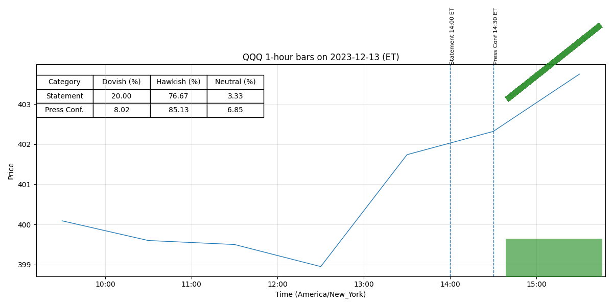

For release at 2:00 p.m. EST January 31, 2024 Recent indicators suggest that economic activity has been expanding at a solid pace. (0.414)
Job gains have moderated since early last year but remain strong, and the unemployment rate has remained low. (0.548)
Inflation has eased over the past year but remains elevated. (0.511)
The Committee judges that the risks to achieving its employment and inflation goals are moving into better balance. (0.503)
The economic outlook is uncertain, and the Committee remains highly attentive to inflation risks. (0.429)
In support of its goals, the Committee decided to maintain the target range for the federal funds rate at 5-1/4 to 5-1/2 percent. (0.505)
In considering any adjustments to the target range for the federal funds rate, the Committee will carefully assess incoming data, the evolving outlook, and the balance of risks. (0.427)
The Committee does not expect it will be appropriate to reduce the target range until it has gained greater confidence that inflation is moving sustainably toward 2 percent. (0.425)
In addition, the Committee will continue reducing its holdings of Treasury securities and agency debt and agency mortgage-backed securities, as described in its previously announced plans. (0.572)
The Committee is strongly committed to returning inflation to its 2 percent objective. (0.552)
In assessing the appropriate stance of monetary policy, the Committee will continue to monitor the implications of incoming information for the economic outlook. (0.775)
The Committee’s assessments will take (more) -2- into account a wide range of information, including readings on labor market conditions, inflation pressures and inflation expectations, and financial and international developments. (0.548)
Voting for the monetary policy action were Jerome H. Powell, Chair; John C. Williams, Vice Chair; Thomas I. Barkin; Michael S. Barr; Raphael W. Bostic; Michelle W. Bowman; Lisa D. Cook; Mary C. Daly; Philip N. Jefferson; Adriana D. Kugler; Loretta J. Mester; and Christopher J. Waller. (0.791)
-0- Attachment For media inquiries, please email media@frb.gov or call 202-452-2955. (0.646)
For release at 2:00 p.m. EST January 31, 2024 Decisions Regarding Monetary Policy Implementation The Federal Reserve has made the following decisions to implement the monetary policy stance announced by the Federal Open Market Committee in its statement on January 31, 2024: • The Board of Governors of the Federal Reserve System voted unanimously to maintain the interest rate paid on reserve balances at 5.4 percent, effective February 1, 2024. (0.512)
• As part of its policy decision, the Federal Open Market Committee voted to direct the Open Market Desk at the Federal Reserve Bank of New York, until instructed otherwise, to execute transactions in the System Open Market Account in accordance with the following domestic policy directive: "Effective February 1, 2024, the Federal Open Market Committee directs the Desk to: (0.523)
o Conduct standing overnight repurchase agreement operations with a minimum bid rate of 5.5 percent and with an aggregate operation limit of $500 billion. (0.729)
o Conduct standing overnight reverse repurchase agreement operations at an offering rate of 5.3 percent and with a per-counterparty limit of $160 billion per day. (0.759)
o Roll over at auction the amount of principal payments from the Federal Reserve's holdings of Treasury securities maturing in each calendar month that exceeds a cap of $60 billion per month. (0.511)
o Reinvest into agency mortgage-backed securities (MBS) the amount of principal payments from the Federal Reserve's holdings of agency debt and agency MBS received in each calendar month that exceeds a cap of $35 billion per month. (0.639)
o Allow modest deviations from stated amounts for reinvestments, if needed for operational reasons. (0.756)
o Engage in dollar roll and coupon swap transactions as necessary to facilitate settlement of the Federal Reserve's agency MBS transactions."" (0.559)
For release at 2:00 p.m. EST December 13, 2023
Recent indicators suggest that growth of economic activity has slowed from its strong
pace in the third quarter. (0.469)
Job gains have moderated since earlier in the year but remain strong,
and the unemployment rate has remained low. (0.549)
Inflation has eased over the past year but remains
elevated. (0.511)
The U.S. banking system is sound and resilient. (0.764)
Tighter financial and credit conditions
for households and businesses are likely to weigh on economic activity, hiring, and inflation. (0.708)
The extent of these effects remains uncertain. (0.586)
The Committee remains highly attentive to
inflation risks. (0.487)
In support of these goals, the Committee decided to maintain the
target range for the federal funds rate at 5-1/4 to 5-1/2 percent. (0.494)
The Committee will continue to
assess additional information and its implications for monetary policy. (0.807)
In determining the extent
of any additional policy firming that may be appropriate to return inflation to 2 percent over
time, the Committee will take into account the cumulative tightening of monetary policy, the lags
with which monetary policy affects economic activity and inflation, and economic and financial
developments. (0.701)
In addition, the Committee will continue reducing its holdings of Treasury
securities and agency debt and agency mortgage-backed securities, as described in its previously
announced plans. (0.572)
The Committee is strongly committed to returning inflation to its 2 percent
objective. (0.552)
(more)
-2-
In assessing the appropriate stance of monetary policy, the Committee will continue to
monitor the implications of incoming information for the economic outlook. (0.761)
The Committee’s assessments will take
into account a wide range of information, including readings on labor market conditions,
inflation pressures and inflation expectations, and financial and international developments. (0.536)
Voting for the monetary policy action were Jerome H. Powell, Chair; John C. Williams,
Vice Chair; Michael S. Barr; Michelle W. Bowman; Lisa D. Cook; Austan D. Goolsbee; Patrick
Harker; Philip N. Jefferson; Neel Kashkari; Adriana D. Kugler; Lorie K. Logan; and Christopher
J. Waller. (0.794)
-0-
For media inquiries, please email media@frb.gov or call 202-452-2955. (0.654)
Attachments
For release at 2:00 p.m. EST December 13, 2023
Decisions Regarding Monetary Policy Implementation
The Federal Reserve has made the following decisions to implement the monetary policy stance
announced by the Federal Open Market Committee in its statement on December 13, 2023:
• The Board of Governors of the Federal Reserve System voted unanimously to maintain the
interest rate paid on reserve balances at 5.4 percent, effective December 14, 2023. (0.478)
• As part of its policy decision, the Federal Open Market Committee voted to direct the Open
Market Desk at the Federal Reserve Bank of New York, until instructed otherwise, to
execute transactions in the System Open Market Account in accordance with the following
domestic policy directive:
"Effective December 14, 2023, the Federal Open Market Committee directs the Desk to: (0.524)
Conduct standing overnight repurchase agreement operations with a minimum bid
o
rate of 5.5 percent and with an aggregate operation limit of $500 billion. (0.724)
Conduct standing overnight reverse repurchase agreement operations at an
o
offering rate of 5.3 percent and with a per-counterparty limit of $160 billion per
day. (0.761)
Roll over at auction the amount of principal payments from the Federal Reserve's
o
holdings of Treasury securities maturing in each calendar month that exceeds a
cap of $60 billion per month. (0.511)
Reinvest into agency mortgage-backed securities (MBS) the amount of principal
o
payments from the Federal Reserve's holdings of agency debt and agency MBS
received in each calendar month that exceeds a cap of $35 billion per month. (0.639)
Allow modest deviations from stated amounts for reinvestments, if needed for
o
operational reasons. (0.769)
Engage in dollar roll and coupon swap transactions as necessary to facilitate
o
settlement of the Federal Reserve's agency MBS transactions."" (0.552)
The Committee seeks to achieve maximum employment and inflation at the rate of 2 percent over the longer run. (0.612)
The Committee would be prepared to adjust the stance of monetary policy as appropriate if risks emerge that could impede the attainment of the Committee’s goals. (0.721)
Redeem Treasury coupon securities up to this monthly cap and Treasury bills to the extent that coupon principal payments are less than the monthly cap. (0.398)
• In a related action, the Board of Governors of the Federal Reserve System voted unanimously to approve the establishment of the primary credit rate at the existing level of 5.5 percent. (0.561)
(more) -2- This information will be updated as appropriate to reflect decisions of the Federal Open Market Committee or the Board of Governors regarding details of the Federal Reserve's operational tools and approach used to implement monetary policy. (0.625)
More information regarding open market operations and reinvestments may be found on the Federal Reserve Bank of New York's website. (0.801)